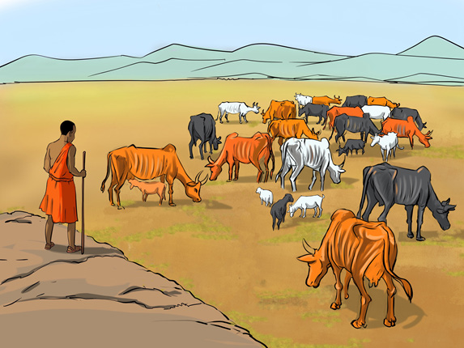

Ways of controlling the effects of poor livestock keeping on the environment
One of the ways of controlling the effects of poor livestock keeping on the environment is to avoid keeping a large number of livestock in a small area. Reducing the number of livestock can help reduce the effects of livestock keeping on the environment. Thus, it is important to educate livestock keepers on the advantages of keeping a few quality breeds of livestock that have higher yields such as abundant quality milk, meat and skin. In addition, it is important to motivate and educate livestock keepers about the importance of undertaking zero-grazing and avoiding nomadic pastoralism.